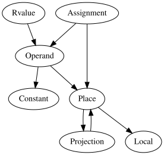

MIR construction
lowerشدن HIR به MIR برای فهرست زیر (که احتمالاً ناقص است) از آیتمها رخ میدهد:
- بدنهٔ توابع و closureها
- مقداردهیهای اولیهٔ آیتمهای
staticوconst - مقداردهیهای اولیهٔ discriminantهای enum
- Glue and shims of any kind
- توابع مقداردهی اولیهٔ tuple struct
- کد drop (تابع
Drop::dropمستقیماً فراخوانی نمیشود) - پیادهسازیهای drop برای نوعهایی که پیادهسازی صریح
Dropندارند
lowering با فراخوانی کوئری mir_built فعال میشود.
سازندهٔ MIR در واقع از HIR استفاده نمیکند،
بلکه بهجای آن روی THIR عمل میکند و عبارتهای THIR را بهصورت بازگشتی پردازش میکند.
lowering برای هر آرگومان طبق امضا متغیر محلی میسازد.
سپس برای هر binding مشخصشده متغیر محلی میسازد (مثلاً (a, b): (i32, String) سه binding تولید میکند، یکی برای آرگومان و دو تا برای bindingها).
سپس دسترسیهای فیلد را تولید میکند که فیلدها را از آرگومان میخوانند و مقدار را در متغیر binding مینویسند.
پس از انجام این مقداردهی اولیه، lowering فراخوانی بازگشتی به تابعی را فعال میکند که MIR بدنه (عبارت Block) را تولید میکند و نتیجه را در RETURN_PLACE مینویسد.
همهچیز را unpack! کنید
توابعی که MIR تولید میکنند معمولاً در یکی از دو الگو قرار میگیرند. اول، اگر تابع فقط دستور تولید کند، basic blockی را بهعنوان آرگومان میگیرد که آن دستورها باید به آن افزوده شوند. سپس میتواند نتیجه را مثل همیشه برگرداند:
fn generate_some_mir(&mut self, block: BasicBlock) -> ResultType {
...
}اما توابع دیگری هم هستند که ممکن است basic blockهای جدید هم تولید کنند.
برای مثال، lowerکردن عبارتی مثل if foo { 22 } else { 44 } نیاز به تولید «گراف الماسیشکل» کوچکی دارد.
در این مورد، توابع basic blockی را میگیرند که کدشان از آن شروع میشود و basic block (بالقوه) جدیدی را برمیگردانند که تولید کد در آن پایان مییابد.
نوع BlockAnd برای نمایش این بهکار میرود:
fn generate_more_mir(&mut self, block: BasicBlock) -> BlockAnd<ResultType> {
...
}وقتی این توابع را فراخوانی میکنید، معمول است متغیر محلی block داشته باشید که عملاً «نشانگر (cursor)» است.
نقطهای را نشان میدهد که MIR جدید را در آن میافزاییم.
وقتی generate_more_mir را فراخوانی میکنید، میخواهید این cursor را بهروز کنید.
میتوانید دستی انجام دهید، اما خستهکننده است:
let mut block;
let v = match self.generate_more_mir(..) {
BlockAnd { block: new_block, value: v } => {
block = new_block;
v
}
};به همین دلیل ماکرویی ارائه میدهیم که اجازه میدهد بنویسید
let v = unpack!(block = self.generate_more_mir(...)).
این فقط بلوک جدید را استخراج میکند و متغیر block را که در unpack! نام بردهاید بازنویسی میکند.
lowerکردن عبارتها به MIR مطلوب
اساساً چهار نوع بازنمایی هست که ممکن است از یک عبارت بخواهید:
Placeبه مکان حافظهٔ از پیش موجود (یا بخشی از آن) ارجاع میدهد (local، static، promoted)Rvalueچیزی است که میتوان بهPlaceمنتسب کردOperandآرگومان مثلاً عملیات+یا فراخوانی تابع است- متغیر موقتی که کپی مقدار را در بر دارد
تصویر زیر نمای کلی تعاملهای بین بازنماییها را نشان میدهد:

برای نمای دقیقتر اینجا کلیک کنید

با lowerکردن بدنهٔ تابع به Rvalue شروع میکنیم تا بتوانیم انتسابی به RETURN_PLACE بسازیم، این lowering به Rvalue به نوبهٔ خود lowering به Operand را برای آرگومانهایش (در صورت وجود) فعال میکند.
lowering به Operand یا operand از نوع const تولید میکند،
یا از یک Place move/copy میکند، که lowering به Place را فعال میکند.
عبارتی که به Place lower میشود میتواند به نوبهٔ خود باعث ساخت temporary شود اگر عبارت در حال lowerشدن عملیات داشته باشد.
اینجاست که مار دم خودش را گاز میگیرد و باید lowering به Rvalue را برای عبارتی که باید در local نوشته شود فعال کنیم.
Operator lowering
عملگرها روی نوعهای داخلی به فراخوانی تابع lower نمیشوند (که به فراخوانیهای بازگشتی بینهایت میانجامید، چون implهای trait دوباره خود عملیات را در بر دارند).
بهجای آن Rvalueهایی برای عملگرهای دوتایی و یگانی و عملیات اندیس هست.
این Rvalueها بعداً به عملیات اولیهٔ LLVM یا intrinsicهای LLVM codegen میشوند.
عملگرها روی همهٔ نوعهای دیگر به فراخوانی تابع به impl آنها از trait متناظر عملگر lower میشوند.
صرفنظر از نوع lowering، آرگومانهای عملگر به Operand lower میشوند.
یعنی همهٔ آرگومانها یا ثابت هستند یا به مقداری که از قبل در جایی در local یا static وجود دارد ارجاع میدهند.
Method call lowering
فراخوانی متدها به همان TerminatorKind فراخوانی توابع lower میشوند.
در MIR دیگر تفاوتی بین فراخوانی متد و فراخوانی تابع نیست.
Conditions
شرطهای if و دستورهای match برای enumهایی با variantهای بدون فیلد به TerminatorKind::SwitchInt lower میشوند.
هر مقدار ممکن (یعنی 0 و 1 برای شرطهای if) یک BasicBlock متناظر دارد که کد به آن ادامه مییابد.
آرگومانی که روی آن شاخه میشود (باز هم) Operandی است که مقدار شرط if را نشان میدهد.
Pattern matching
دستورهای match برای enumهایی با variantهای دارای فیلد هم به TerminatorKind::SwitchInt lower میشوند، اما Operand به Placeای ارجاع میدهد که discriminant مقدار در آن یافت میشود.
این اغلب شامل خواندن discriminant به یک متغیر موقت جدید است.
Aggregate construction
مقادیر ترکیبی (aggregate) از هر نوع (مثلاً struct یا tuple) از طریق Rvalue::Aggregate ساخته میشوند.
همهٔ فیلدها به Operator lower میشوند.
این اساساً معادل یک دستور انتساب برای هر فیلد aggregate است، بهعلاوهٔ انتساب به discriminant در مورد enumها.